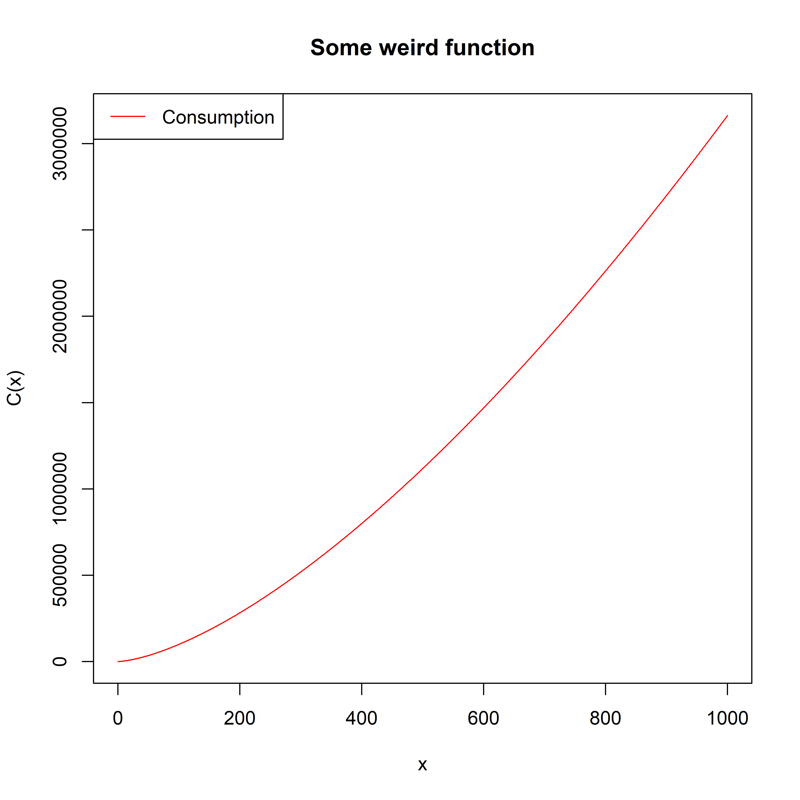
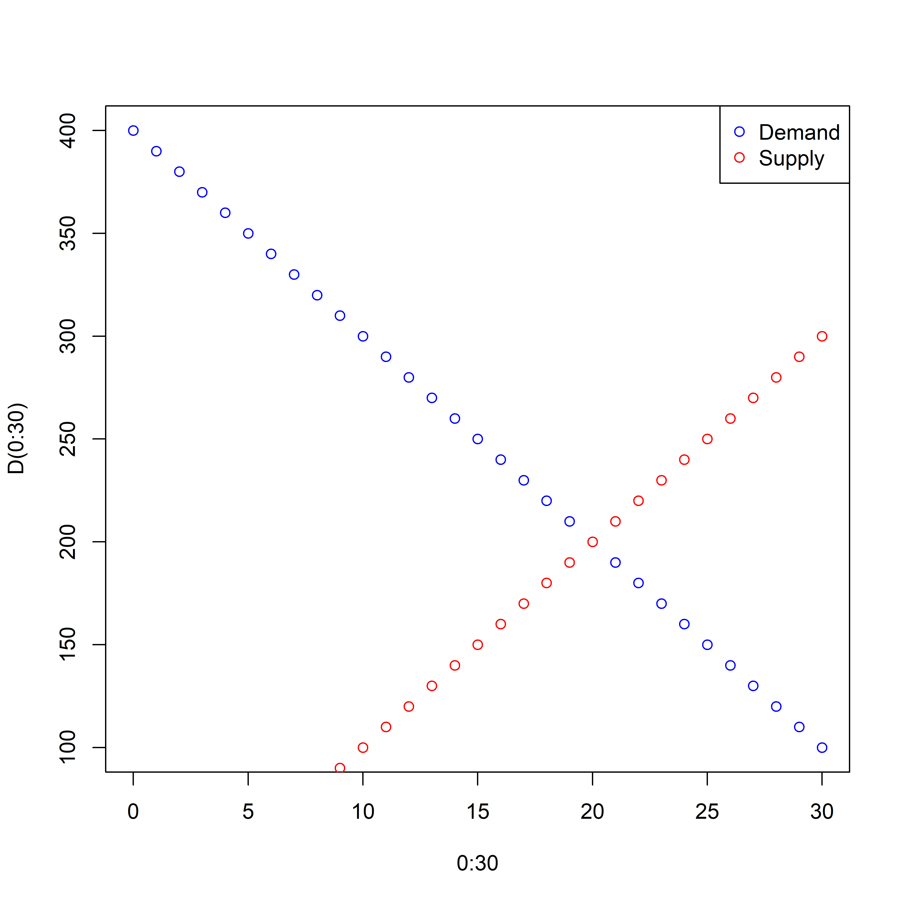
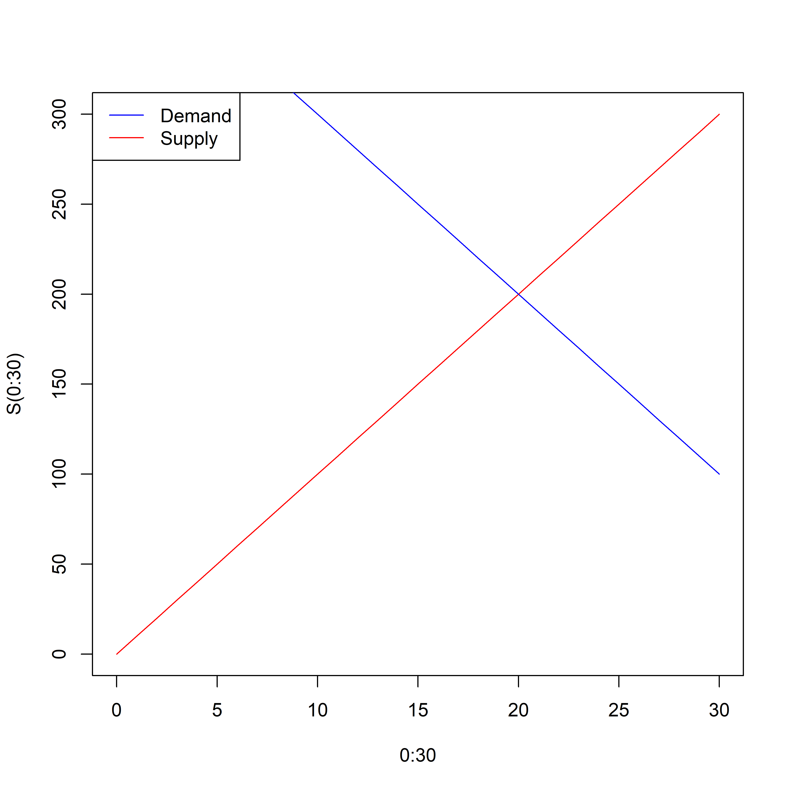

1.2 QM1 – Session 2 (Functions in R)
Defining own functions
Functions in Rare defined as followed
(function(x) 1 + 2 * x) # function in x: f(x) = 1 + 2x
## function(x) 1 + 2 * x
(function(x) 1 + 2 * x)(3) # x = 3: f(3) = 1 + 2*3 = 7
## [1] 7
Functions can be stored like values.
C <- function(x) {
100 * x * sqrt(x) + 500
} # the body of more complex functions is written inside curly brackets
C( 2) # applies the function to the argument 2
## [1] 782.8427
C(-1) # sqrt(-1) results in NaN (Not a Number)
## Warning in sqrt(x): NaNs produced
## [1] NaN
C(0:10) # the function can be applied to vectors; every entry is a single argument
## [1] 500.0000 600.0000 782.8427 1019.6152 1300.0000 1618.0340 1969.6938
## [8] 2352.0259 2762.7417 3200.0000 3662.2777
C # gives back the function, or the head of the function
## function(x) {
## 100 * x * sqrt(x) + 500
## }
## <bytecode: 0x0000000025458980>
Plotting graphs
x <- 0:1000 # creates a vector with integers from 0 to 1000
plot(x, C(x)) # creates a graph by plotting x and C(x)
plot(x, C(x), type='l', col='red') # 'type' changes the plot type, 'col' the color
title("Some weird function") # adds a title to the current plot
legend( # adds a legend to the current plot
"topleft", # determines the position of the legend
c("Consumption"), # adds the labels to the legend
col=c("red"), # determines the color of the plot corresponding to the labels
lty=c(1), # determines the line type of the plot corresponding to the labels
lwd=c(1) # determines the line width of the plot corresponding to the labels
)

d.col <- 4
s.col <- 2
D <- function(P) -10 * P + 400
plot(0:30, D(0:30), col = d.col)
S <- function(P) 10 * P
points(0:30, S(0:30), col = s.col) # new points are added to the current plot
legend(
"topright",
c("Demand", "Supply"),
col=c(d.col, s.col),
pch=c(1, 1)
)

plot(0:30, S(0:30), type = 'l', col = s.col)
lines(0:30, D(0:30), col=d.col) # new lines are added to the current plot
legend(
"topleft",
c("Demand", "Supply"),
col=c(d.col, s.col),
lty=c(1, 1),
lwd=c(1, 1)
)

f <- function(x) -.5 * x^2 - x + 1.5
xs <- seq(-4, 3, .01)
plot(xs, f(xs), type = 'l')
abline(h = 0) # adds a strait line to the current plot
P <- function(s) 40000 * s^.4
Plog <- function(s) log(40000) + .4*log(s) # a linear function in log(s)
Ploglog <- function(s.log) log(40000) + .4*s.log # a linear function
xs <- 1:1000
plot(xs, P(xs), type = 'l')
all(abs(log(P(xs)) - Plog(xs)) < 1e-13)
## [1] TRUE
all(abs(log(P(xs)) - Ploglog(log(xs))) < 1e-13)
## [1] TRUE
plot(log(xs), log(P(xs))) # plots the axes on a logged scale
Given an interest rate, after how many years has the investment doubled?
| where | | is the initial investment, |
| | | is the interest rate per year in percentage points |
| and | | is the number of years it takes the initial investment to double. |
i <- 1:9 # interest rate
investment <- 123 # initial investment
y2d <- function(i) log(2) / log(1 + i/100)
y2d(i)
## [1] 69.660717 35.002789 23.449772 17.672988 14.206699 11.895661 10.244768
## [8] 9.006468 8.043232
2 * investment == investment * (1 + i/100)^y2d(i)
## [1] TRUE TRUE TRUE TRUE TRUE TRUE TRUE TRUE FALSE
Consequentely for a yearly interest rate of 1 percent, it takes approximately 70 years to double the
initial investment. For a yearly interest rate of 2 percent, it takes approximately 35 years
to double the initial investment. A vague roule of thumb can be developed, the rule of
70.
## [1] 70.000000 35.000000 23.333333 17.500000 14.000000 11.666667 10.000000
## [8] 8.750000 7.777778
abs(70/i - y2d(i)) < rep(1, length(i))
## [1] TRUE TRUE TRUE TRUE TRUE TRUE TRUE TRUE TRUE
Function arguments can have default parameters
In R it is possible to specify default values for input parameters. Then this parameters can be left
out, when calling the function.
linearfunction <- function(x, a = 0, b = 0) a*x + b # assigns a linear function
linearfunction(1:5, 1, 2) # calculates the function values for 1:5 with a = 1, b = 2
## [1] 3 4 5 6 7
linearfunction(1:5, a = 1, b = 2)
## [1] 3 4 5 6 7
linearfunction(1:5, a = 2, b = 1)
## [1] 3 5 7 9 11
linearfunction(1:5) # a and b are not specified, i.e. a = 0 and b = 0
## [1] 0 0 0 0 0
linearfunction(1:5, b = 1) # a is left out, i.e. a = 0
## [1] 1 1 1 1 1
A note about return values
It is importent to know, when and which parameters are given back by a function. There are some
ways to give back function values.
f1 <- function(x) {
z <- x + 123
y <- x^2
y
}
f2 <- function(x) {
z <- x + 123
y <- x^2
}
f3 <- function(x) {
z <- x + 123
y <- x^2
invisible(y)
}
f1(2) # will show
## [1] 4
f2(2) # will not show
f3(2) # will not show
print(f2(2)) # will show
## [1] 4
## [1] 4
## [1] 4
## [1] 4
all.equal(f1(2), f2(2), f3(2))
## [1] TRUE
Function values habe to be returned. Otherwise they will be lost after the function has
terminated.